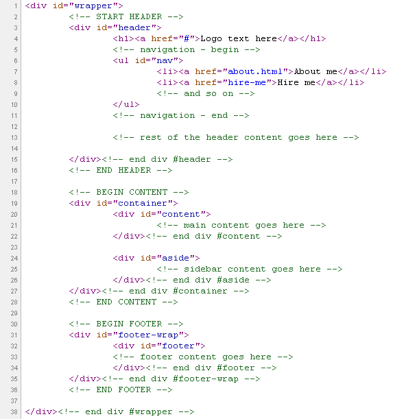

Created: 15.06.2010
By: Gabshot
Email: gabshot@lionwebmedia.com
Thank you for purchasing my theme. If you have any questions that are beyond the scope of this help file, please feel free to email via my user page contact form here. Thanks so much!
This theme is a fixed layout with two columns. All of the information within the main content area is nested within a div with an id of "content". The sidebar's (column #2) content is within a div with an id of "aside". The general template structure is the same throughout the template. Here is the general structure.
If you would like to edit the color, font or stye of any elements in the document, you would do the following:
a { color: #bf1e2e; text-decoration: none; }
If you find that your new style is not overriding, it is most likely because of a specificity problem. Scroll down in your CSS file and make sure that there isn't a similar style that has more weight.
I.E.
#nav > li > a { color: #fff;}
So, to ensure that your new styles are applied, make sure that they carry enough "weight" and that there isn't a style lower in the CSS file that is being applied after yours.
I'm using one CSS file in this theme. The reset rules for some of the elements may be found in the begining of the css document. This file also contains some general styling, such as anchor tag colors, font-sizes, etc. Keep in mind, that these values might be overridden somewhere else in the file.
The file is separated into sections using:
/* - general - */ some code /* default form styling */ some code /* structure */ some code /* header */ some code
And so on for further site elements. Every separate element or block of similar rules have such opening comment.
If you would like to edit a specific section of the site, simply find the appropriate label in the CSS file, and then scroll down until you find the appropriate style that needs to be edited.
Text color inside the about author block info that goes right after the post/portfolio item can be easily altered by changing the hex value of the color rule inside the following selector:
.about-author dd { margin: 20px 0 0; color: #505050;}
All the JavaScript code responsible for extra functionality is stored inside js/dw.js file. Scripts use jQuery framework (v1.3.2+)
The file starts with 'config' object including all config parameters:
I've included all-in-one psd with this theme. Every layer has proper name and each detail is in separate layer all layers are in catalogs which are subpages.
Fonts. The theme uses mostly free font Helvetica! The "Twitter feed" and "bu night" use freeware font Yelly.
Icons. To make the layout looks even more professional in the theme are included Icon Sets released on the GNU General Public License or Free for commercial use.
Once again, thank you so much for purchasing this theme. As I said at the beginning, I'd be glad to help you if you have any questions relating to this theme. No guarantees, but I'll do my best to assist. If you have a more general question relating to the themes on ThemeForest, you might consider visiting the forums and asking your question in the "Item Discussion" section.
Gabshot